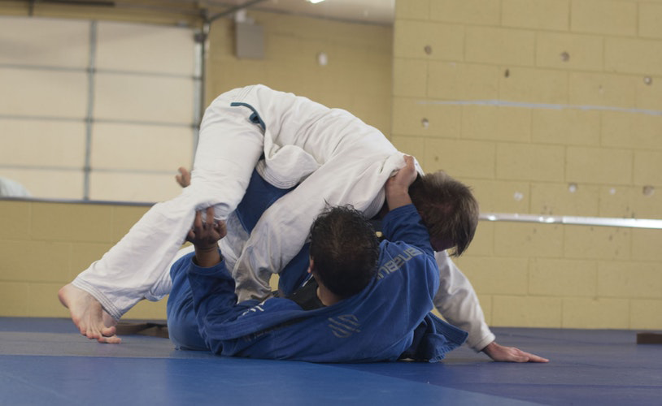

In Nederland hebben wij het heel erg goed, we wonen in een van de veiligste landen op de wereld en we mogen overal zo wat doen en laten wat wij willen.
Alleen in andere delen van de wereld is dit niet het geval en omdat wij sinds kinds af aan gewend zijn geraakt aan een veilige wereld weten we ons vaak niet
te verdedigen tegen de monsters van de buiten wereld. Zo zou het handig zijn om een verdedigingskunst te leren om jezelf te kunnen verdedigen.
Jiu jitsu is een zelfverdedigingskunst waarbij je de tegenstander zodanig probeerd uit te schakelen dat ze zwaar gewond raken en potentieel dood gaan.
Natuurlijk betekent dit niet dat je dit zult gaan leren in de praktijk, het gaat er voornamelijk om dat je ze als zelfverdedingswapens kunt gebruiken in
Situaties waarin het echt zal moeten.
